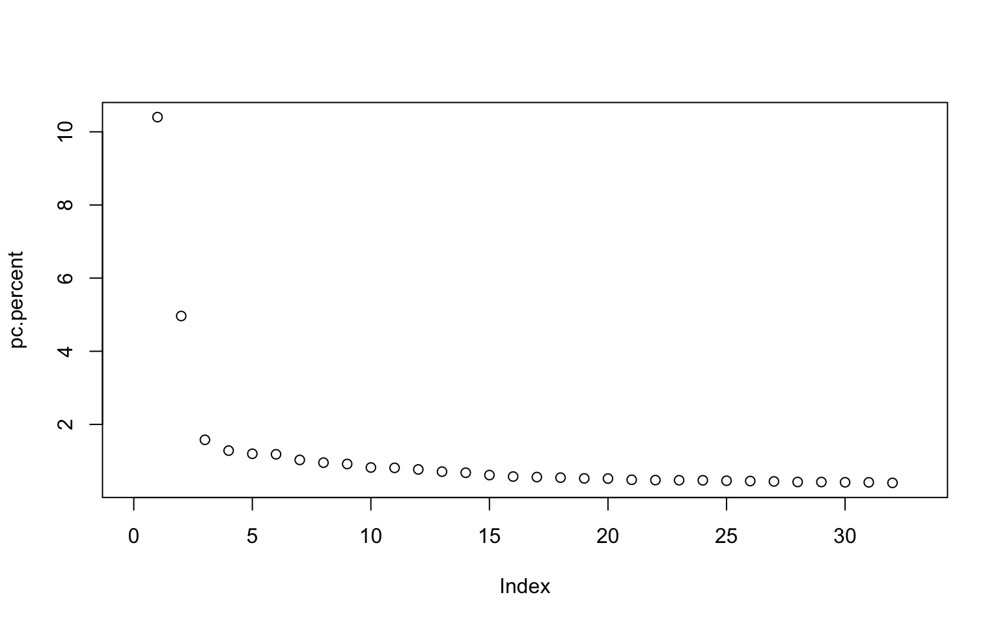
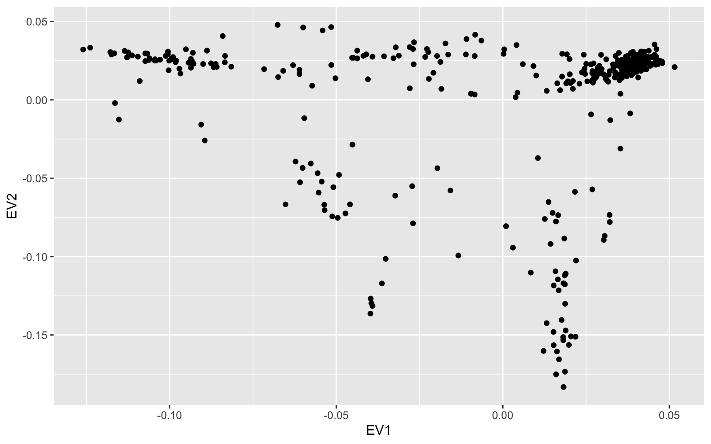
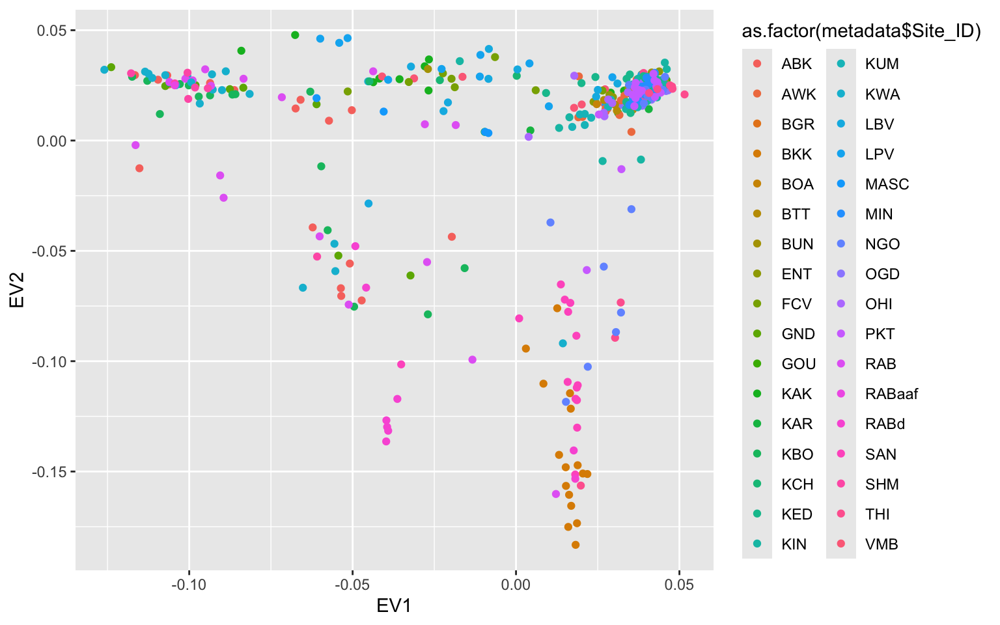
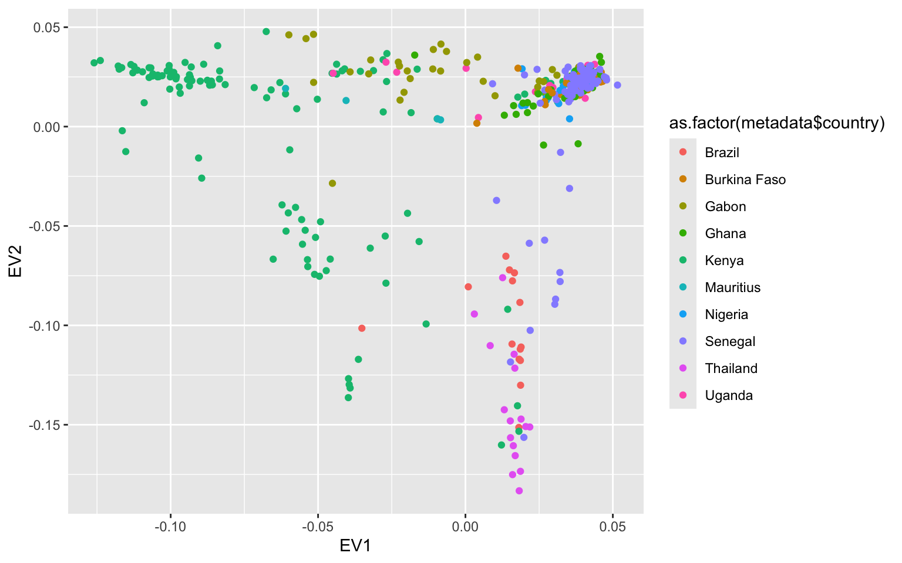
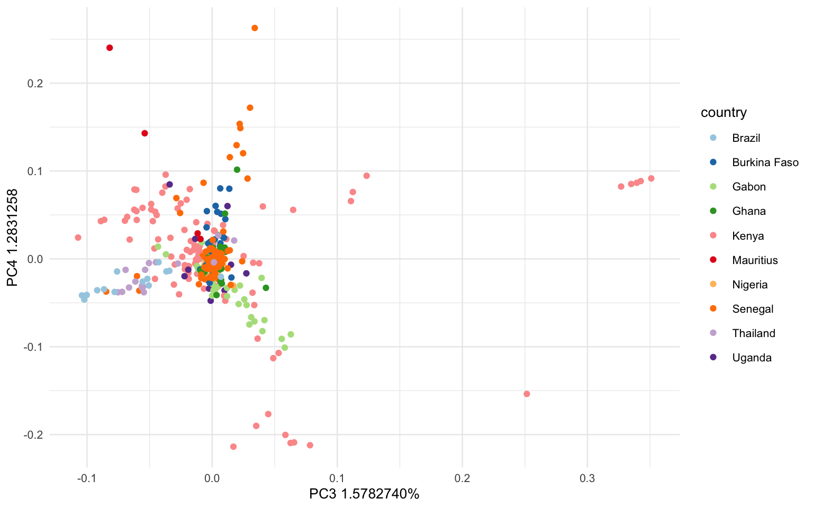

9 Week 8: PCAs & Mosquitos
We will be using an Ae. aegypti mosquito population genomic data to create PCAs. Lecture slides can be accessed here: Week 8 Slides
This data is from a paper by Rose et al. (2020) titled [“Climate and Urbanization Drive Mosquito Preference for Humans”] https://www.cell.com/current-biology/fulltext/S0960-9822(20)30978-7?referringSource=articleShare
These samples were taken across Central Africa, shown in the figure below. Ae. aegypti has only 3 chromosomes, but the raw dataset is quite large, so we have subsetted the vcf file from this study to contain only the first chromosome. We will use this subsetted vcf to create a principle component analysis (PCA) and learn how to visualize variation in this dataset.

9.1 Main Objectives:
- Learn what an eigenvalue and an eigenvector are and what information they give us
- Learn how to interpret a principle component analysis (PCA)
- Visualize population genomic data using a PCA
9.2 Download the data in terminal
We first need to download the data in terminal. So navigate to your directory and do the following command to get the vcf file we need onto your farm desktop. I got the data from a data repository for this paper and modified it to be easier to work with in class.
cd /group/rbaygrp/eve198-genomics/yourdirectory
wget https://raw.githubusercontent.com/mlarmstrong/IntroGenomics_Data/main/week8.zipIf you want to work from your own R studio on your desktop, first you will need to install R & R studio (https://posit.co/download/rstudio-desktop/).
Then download the data directly from the class data github: https://github.com/mlarmstrong/IntroGenomics_Data First click week8.zip and then click the three dots at the top to download.
Regardless of download method, unzip the week8 directory and navigate inside. There should be two files: simple_meta.csv is our metadata file and NC_035107.small.vcf.gz is our subsetted vcf file with our genomic data.
9.3 Moving to R & Installing Packages
Now we will move to R! We will need to install several packages today.
- SeqArray()
- gdsfmt()
- SNPRelate()
- ggplot2()
SeqArray() to help us reformat our vcf file to a Genomic Data Structure (GDS) that is easier to read in for our principle component analysis (PCA). We need the package SNPRelate() to create a PCA from our genotype data. You will need to use Biocmanager to install both of these packages, so run if (!require("BiocManager", quietly = TRUE)) install.packages("BiocManager") and then BiocManager::install(c("SeqArray", "SNPRelate"))
We will also need gdsfmt() to open the newly created GDS formatted file and since it is a dependency for SeqArray() it will actually download with that package installation. This package calculates the eigenvectors and eigenvalues for principal component analysis, meaning that it will look at how the samples are similar and different from one another and plot that variation using principle component axes. We will also need ggplot2(). After installing all of these packages be sure to load them with the commands below:
## Warning: package 'SeqArray' was built under R version 4.4.1## Loading required package: gdsfmt## Warning: package 'gdsfmt' was built under R version 4.4.1## Warning: package 'SNPRelate' was built under R version 4.4.19.4 Set Working Directory
Now that we are working with downloaded data it is important to set your working directory in R so you know where to store your files. I would recommend just saving your script and all of the data for today into your week8 directory in your named directory. To set your working directory you can do the following: setwd("~/where/you/are/storing/data/week8"). This step can be tricky, so use your files section on R to see where your files are stored and identify the correct working directory path!
If you click the files tab on the right you should be able to see all of the files in your working directory too!
9.5 read vcf file
Now let’s read in our vcf file and convert it to a gds object.
## Wed May 21 12:23:09 2025
## Variant Call Format (VCF) Import:
## file:
## NC_035107.small.vcf.gz (16.5M)
## file format: VCFv4.2
## genome reference: file:///tigress/noahr/ref/male_altref_iter3.fna
## # of sets of chromosomes (ploidy): 2
## # of samples: 393
## genotype field: GT
## genotype storage: bit2
## compression method: LZMA_RA
## # of samples: 393
## INFO: INDEL,IDV,IMF,DP,VDB,RPB,MQB,BQB,MQSB,SGB,MQ0F,AD,ICB,HOB,AC,AN,DP4,MQ
## FORMAT: PL,DP,AD,GQ
## Output:
## mosq.gds
## [Progress Info: mosq.gds.progress]
## Parsing 'NC_035107.small.vcf.gz':
## + genotype/data { Bit2 2x393x11855 LZMA_ra(20.8%), 505.5K }
## Digests:
## sample.id [md5: 2b5f70e2de68365f0964ad06b289559e]
## variant.id [md5: 3133b35e9381f455ed19d7f2d567852f]
## position [md5: 36b327c004dc76c2a4a64c7cf2683970]
## chromosome [md5: c4663e7e1b9dd5969b071528bd6912a3]
## allele [md5: 8851ccc0761efcb012f4a1dc3f1979d3]
## genotype [md5: f6a52ad75dadbe4334a441fa925a8bec]
## phase [md5: a7e3dac1ef09ed7704171a972f2c3401]
## annotation/id [md5: 1ba9b45e63d62824dfa5d4fc84bdf4d6]
## annotation/qual [md5: 11dd31fff5ac2e69a8105dc9c7c2f30b]
## annotation/filter [md5: 3cd096d89bf97bb9054e730342351588]
## annotation/info/INDEL [md5: 779b93c1ae44d71319b54cacce624d4e]
## annotation/info/IDV [md5: d971e74c743fc1c4ff8c29c6bcb95c2b]
## annotation/info/IMF [md5: e27641d6da4f2188816db703895dc97a]
## annotation/info/DP [md5: 607e769e651f4b0493ecc4d17ac12bf5]
## annotation/info/VDB [md5: 3f73c463085cef065df88254015e0b1d]
## annotation/info/RPB [md5: e373f3ca1307b9bcbfbfb47d611549d2]
## annotation/info/MQB [md5: d691a113110445b3e2250a4126847d7f]
## annotation/info/BQB [md5: fcc1c68f19e24c75b0e59adcaa8c6f8c]
## annotation/info/MQSB [md5: b50dc791551b470c578f5f4584ba7a5b]
## annotation/info/SGB [md5: 9932a29a48c92426c7bacd8828fe2e16]
## annotation/info/MQ0F [md5: 4a710d3368681e5d988d9ae74fe03afb]
## annotation/info/AD [md5: cb8359395af44553f0879754d1bf442c]
## annotation/info/ICB [md5: 68e46e056d8267853d70c4fc95912472]
## annotation/info/HOB [md5: b9d490a57a492c3a5d6434f5e280d739]
## annotation/info/AC [md5: 33b73e2dc66b4db4dcb8045d1e700f72]
## annotation/info/AN [md5: 90f0bd9ec060ed79be92a16ae82e64a3]
## annotation/info/DP4 [md5: 8bb694bd475b48df8c8503e2ff914f94]
## annotation/info/MQ [md5: 3ecc9bd5656be14f8ae9fd949e336cde]
## annotation/format/PL [md5: 474edb72c0e31fd693eff08d68337c85]
## annotation/format/DP [md5: 62a3464d2d00f6c8619851e1c62bc881]
## annotation/format/AD [md5: 052e3bfc7f4599ffb8b9f6e59f7ffe48]
## annotation/format/GQ [md5: 83f2afcd7e0a401e0457904c889ef1cf]
## Done.
## Wed May 21 12:23:39 2025
## Optimize the access efficiency ...
## Clean up the fragments of GDS file:
## open the file 'mosq.gds' (15.9M)
## # of fragments: 1096
## save to 'mosq.gds.tmp'
## rename 'mosq.gds.tmp' (15.9M, reduced: 11.4K)
## # of fragments: 123
## Wed May 21 12:23:39 2025Let’s look at our object genofileseq.mosq. Our dataset has 393 mosquitos and 11855 SNPs. This object also has variant id, position, chromosome, allele, genotype data and additional information.
## Object of class "SeqVarGDSClass"
## File: /Users/maddiearmstrong/Desktop/teaching/intro_genomics/IntroGenomics/mosq.gds (15.9M)
## + [ ] *
## |--+ description [ ] *
## |--+ sample.id { Str8 393 LZMA_ra(8.37%), 1.2K } *
## |--+ variant.id { Int32 11855 LZMA_ra(9.45%), 4.4K } *
## |--+ position { Int32 11855 LZMA_ra(23.4%), 10.9K } *
## |--+ chromosome { Str8 11855 LZMA_ra(0.13%), 189B } *
## |--+ allele { Str8 11855 LZMA_ra(12.6%), 5.8K } *
## |--+ genotype [ ] *
## | |--+ data { Bit2 2x393x11855 LZMA_ra(23.8%), 541.6K } *
## | |--+ extra.index { Int32 3x0 LZMA_ra, 18B } *
## | \--+ extra { Int16 0 LZMA_ra, 18B }
## |--+ phase [ ]
## | |--+ data { Bit1 393x11855 LZMA_ra(0.04%), 237B } *
## | |--+ extra.index { Int32 3x0 LZMA_ra, 18B } *
## | \--+ extra { Bit1 0 LZMA_ra, 18B }
## |--+ annotation [ ]
## | |--+ id { Str8 11855 LZMA_ra(1.06%), 133B } *
## | |--+ qual { Float32 11855 LZMA_ra(2.90%), 1.3K } *
## | |--+ filter { Int32,factor 11855 LZMA_ra(0.32%), 161B } *
## | |--+ info [ ]
## | | |--+ INDEL { Bit1 11855 LZMA_ra(6.34%), 101B } *
## | | |--+ IDV { Int32 11855 LZMA_ra(0.32%), 161B } *
## | | |--+ IMF { Float32 11855 LZMA_ra(0.32%), 161B } *
## | | |--+ DP { Int32 11855 LZMA_ra(34.3%), 15.9K } *
## | | |--+ VDB { Float32 11855 LZMA_ra(89.1%), 41.3K } *
## | | |--+ RPB { Float32 11855 LZMA_ra(88.6%), 41.0K } *
## | | |--+ MQB { Float32 11855 LZMA_ra(65.0%), 30.1K } *
## | | |--+ BQB { Float32 11855 LZMA_ra(89.0%), 41.2K } *
## | | |--+ MQSB { Float32 11855 LZMA_ra(60.8%), 28.2K } *
## | | |--+ SGB { Float32 11855 LZMA_ra(82.1%), 38.0K } *
## | | |--+ MQ0F { Float32 11855 LZMA_ra(0.32%), 157B } *
## | | |--+ AD { Int32 23710 LZMA_ra(39.3%), 36.4K } *
## | | |--+ ICB { Float32 11855 LZMA_ra(61.8%), 28.6K } *
## | | |--+ HOB { Float32 11855 LZMA_ra(58.8%), 27.2K } *
## | | |--+ AC { Int32 11855 LZMA_ra(25.1%), 11.6K } *
## | | |--+ AN { Int32 11855 LZMA_ra(21.5%), 10.0K } *
## | | |--+ DP4 { Int32 4x11855 LZMA_ra(35.2%), 65.3K } *
## | | \--+ MQ { Int32 11855 LZMA_ra(2.40%), 1.1K } *
## | \--+ format [ ]
## | |--+ PL [ ] *
## | | \--+ data { VL_Int 393x35565 LZMA_ra(32.2%), 6.0M } *
## | |--+ DP [ ] *
## | | \--+ data { VL_Int 393x11855 LZMA_ra(51.4%), 2.3M } *
## | |--+ AD [ ] *
## | | \--+ data { VL_Int 393x23710 LZMA_ra(36.0%), 3.2M } *
## | \--+ GQ [ ] *
## | \--+ data { VL_Int 393x11855 LZMA_ra(59.6%), 3.5M } *
## \--+ sample.annotation [ ]Now that our data is in the right format we can run our PCA! We want it to analyze the full dataset, so we set autosome.only to FALSE. This again tells us how many variants we have and the number of samples in our dataset.
## Principal Component Analysis (PCA) on genotypes:
## Calculating allele counts/frequencies ...
## [..................................................] 0%, ETC: --- [==================================================] 100%, completed, 1s
## # of selected variants: 11,855
## # of samples: 393
## # of SNVs: 11,855
## using 1 thread
## # of principal components: 32
## CPU capabilities:
## Wed May 21 12:23:40 2025 (internal increment: 1248)
## [..................................................] 0%, ETC: --- [==================================================] 100%, completed, 2s
## Wed May 21 12:23:42 2025 Begin (eigenvalues and eigenvectors)
## Wed May 21 12:23:42 2025 Done.If we want to look at what class the object is and the column headers of our pca object we can run the following code.
## [1] "snpgdsPCAClass"## [1] "sample.id" "snp.id" "eigenval" "eigenvect" "varprop" "TraceXTX"
## [7] "Bayesian" "genmat"Explore what each of these objects are and print only the top 10 rows
## [1] "Debug011_aegypti_Arabuko_Kenya_01" "Debug011_aegypti_Arabuko_Kenya_02"
## [3] "Debug011_aegypti_Arabuko_Kenya_03" "Debug011_aegypti_Arabuko_Kenya_04"
## [5] "Debug011_aegypti_Arabuko_Kenya_05" "Debug011_aegypti_Arabuko_Kenya_07"
## [7] "Debug011_aegypti_Arabuko_Kenya_08" "Debug011_aegypti_Arabuko_Kenya_09"
## [9] "Debug011_aegypti_Arabuko_Kenya_10" "Debug011_aegypti_Arabuko_Kenya_11"- sample.id is the name of our sample
- snp.id is the name of our snp
- eigenval is the eigenvalue
- eigenvect is the eigenvector
- varprop is the proportion of variation for each principle component
- TraceXTX is the trace of the genetic covariance matrix
- Bayesian is whether we used bayesian normalization (we did not)
- genmat is the genetic covariance matrix
The column “sample.id” will be important for merging our metadata. The metadata will give more context to our snp data since we can provide information on how to categorize the variation present in our data.
If we plot or print our pc.percent object we can see that there are 32 pc axes but most of the variation is explained by pc 1 and 2. The amount of variation explained decreases with increasing pc axis number.
## [1] 10.4020498 4.9636990 1.5782740 1.2831258 1.1971492 1.1825766
## [7] 1.0287042 0.9539680 0.9176371 0.8208863 0.8118421 0.7681545
## [13] 0.7077274 0.6783483 0.6143333 0.5738263 0.5599696 0.5438564
## [19] 0.5230800 0.5187362 0.4854494 0.4764008 0.4731621 0.4710086
## [25] 0.4594423 0.4509300 0.4406212 0.4250621 0.4244937 0.4173459
## [31] 0.4153109 0.4009164 NaN NaN NaN NaN
## [37] NaN NaN NaN NaN NaN NaN
## [43] NaN NaN NaN NaN NaN NaN
## [49] NaN NaN NaN NaN NaN NaN
## [55] NaN NaN NaN NaN NaN NaN
## [61] NaN NaN NaN NaN NaN NaN
## [67] NaN NaN NaN NaN NaN NaN
## [73] NaN NaN NaN NaN NaN NaN
## [79] NaN NaN NaN NaN NaN NaN
## [85] NaN NaN NaN NaN NaN NaN
## [91] NaN NaN NaN NaN NaN NaN
## [97] NaN NaN NaN NaN NaN NaN
## [103] NaN NaN NaN NaN NaN NaN
## [109] NaN NaN NaN NaN NaN NaN
## [115] NaN NaN NaN NaN NaN NaN
## [121] NaN NaN NaN NaN NaN NaN
## [127] NaN NaN NaN NaN NaN NaN
## [133] NaN NaN NaN NaN NaN NaN
## [139] NaN NaN NaN NaN NaN NaN
## [145] NaN NaN NaN NaN NaN NaN
## [151] NaN NaN NaN NaN NaN NaN
## [157] NaN NaN NaN NaN NaN NaN
## [163] NaN NaN NaN NaN NaN NaN
## [169] NaN NaN NaN NaN NaN NaN
## [175] NaN NaN NaN NaN NaN NaN
## [181] NaN NaN NaN NaN NaN NaN
## [187] NaN NaN NaN NaN NaN NaN
## [193] NaN NaN NaN NaN NaN NaN
## [199] NaN NaN NaN NaN NaN NaN
## [205] NaN NaN NaN NaN NaN NaN
## [211] NaN NaN NaN NaN NaN NaN
## [217] NaN NaN NaN NaN NaN NaN
## [223] NaN NaN NaN NaN NaN NaN
## [229] NaN NaN NaN NaN NaN NaN
## [235] NaN NaN NaN NaN NaN NaN
## [241] NaN NaN NaN NaN NaN NaN
## [247] NaN NaN NaN NaN NaN NaN
## [253] NaN NaN NaN NaN NaN NaN
## [259] NaN NaN NaN NaN NaN NaN
## [265] NaN NaN NaN NaN NaN NaN
## [271] NaN NaN NaN NaN NaN NaN
## [277] NaN NaN NaN NaN NaN NaN
## [283] NaN NaN NaN NaN NaN NaN
## [289] NaN NaN NaN NaN NaN NaN
## [295] NaN NaN NaN NaN NaN NaN
## [301] NaN NaN NaN NaN NaN NaN
## [307] NaN NaN NaN NaN NaN NaN
## [313] NaN NaN NaN NaN NaN NaN
## [319] NaN NaN NaN NaN NaN NaN
## [325] NaN NaN NaN NaN NaN NaN
## [331] NaN NaN NaN NaN NaN NaN
## [337] NaN NaN NaN NaN NaN NaN
## [343] NaN NaN NaN NaN NaN NaN
## [349] NaN NaN NaN NaN NaN NaN
## [355] NaN NaN NaN NaN NaN NaN
## [361] NaN NaN NaN NaN NaN NaN
## [367] NaN NaN NaN NaN NaN NaN
## [373] NaN NaN NaN NaN NaN NaN
## [379] NaN NaN NaN NaN NaN NaN
## [385] NaN NaN NaN NaN NaN NaN
## [391] NaN NaN NaNThere are 33 principle components so we can change our plot to only go up to that limit:

The main drop off in the graph is around 3, suggesting that those first three axes explain most of the variation. However let’s include PCs 1 through 10 to explore the data more in depth.
9.6 Read in Metadata
If we run View(metadata) you can see that our metadata has two columns, Sample_ID and Site_ID. Sample_ID matches our header sample.id in our pca.mosq data. We can combine the metadata with our pca.mosq object and pull the top 10 PC axes. This creates a new object called tab. You can look inside tab using View(tab)
9.7 Prepare for Plotting
#look at pc.percent values in environment
tab<- data.frame(Sample_ID=pca.mosq$sample.id,
EV1=pca.mosq$eigenvect[,1],
EV2=pca.mosq$eigenvect[,2],
EV3=pca.mosq$eigenvect[,3],
EV4=pca.mosq$eigenvect[,4],
EV5=pca.mosq$eigenvect[,5],
EV6=pca.mosq$eigenvect[,6],
EV7=pca.mosq$eigenvect[,7],
EV8=pca.mosq$eigenvect[,8],
EV9=pca.mosq$eigenvect[,9],
EV10=pca.mosq$eigenvect[,10])We then need to check that our metadata and our PCA data are identical and that Sample ID in both datasets match, so let’s match them up with that!
## [1] TRUENow let’s plot our data!

This doesn’t show us much, just that there is a lot of variation along PC1! But we don’t have any information about these samples, so we want to use the metadata to contextualize what we are looking at. So let’s modify the code to fill in our dots by Site_ID. We want to make sure that variable is read as a factor, which is why we add the specification as.factor()

This helps but we don’t really know what each of these site labels really mean. Let’s go back to the metadata and add some more context.
We are going to use a package called dplyr() to modify our metadata. Remember to install.packages() first and then load the package
##
## Attaching package: 'dplyr'## The following objects are masked from 'package:stats':
##
## filter, lag## The following objects are masked from 'package:base':
##
## intersect, setdiff, setequal, unionFrom reading the paper we can assign an additional column of information for each of our samples with “region”. We need to match up our site IDs to a new column that we will make with country information, but first we need to see how many unique sites there are and the names of those sites:
## [1] "ABK" "GND" "KAK" "KBO" "KWA" "RAB" "SHM" "BUN"
## [9] "KCH" "VMB" "KAR" "ENT" "FCV" "LBV" "LPV" "RABd"
## [17] "BGR" "GOU" "OGD" "AWK" "BTT" "BOA" "KIN" "KUM"
## [25] "OHI" "THI" "KED" "MIN" "NGO" "PKT" "BKK" "SAN"
## [33] "RABaaf" "MASC"Now that we know there names, we can write code to add in a new column and assign it by what the site ID says:
metadata <- metadata %>%
mutate(country = case_when(
Site_ID %in% c("BUN", "KAR", "ENT", "KCH") ~ "Uganda",
Site_ID %in% c("BTT", "THI", "KED", "MIN", "NGO", "PKT") ~ "Senegal",
Site_ID == "AWK" ~ "Nigeria",
Site_ID == "MASC" ~ "Mauritius",
Site_ID %in% c("ABK" , "GND" , "KAK" , "KBO" , "KWA" , "RAB" , "SHM", "VMB", "RABaaf", "RABd") ~ "Kenya",
Site_ID %in% c("BOA", "KIN", "KUM") ~ "Ghana",
Site_ID %in% c("FCV", "LBV", "LPV") ~ "Gabon",
Site_ID %in% c("BGR", "OGD", "OHI", "GOU") ~ "Burkina Faso",
Site_ID == "SAN" ~ "Brazil",
Site_ID == "BKK" ~ "Thailand"
))Look at the metadata file again with View(metadata) to check if it worked! There should be a new column called country

This graph is a lot more informative! We see that the points on PC1 and PC2 are heavily grouping by country.
Finally let’s really customize our graph with labels, a legend and unique colors! Install/load library(RColorBrewer) for the color scheme in the pca. You can type ?RColorBrewer for a help tab to pop up where you can see the other color palettes in this package.
To get the percentages I filled into the labels you can run this code from earlier: print(pc.percent)
ggplot(tab, aes(x = EV1, y = EV2, color=as.factor(metadata$country)))+
geom_point()+
labs(x = 'PC1 10.4020498%', y='PC2 4.9636990%', color = "country")+
scale_colour_brewer(palette = "Paired")+
theme_minimal(base_size=10)What if we want to look at other PC axes? You can modify the code above to instead plot PC3 & 4. Just be sure to update the axis labels. What does this figure show us?
ggplot(tab, aes(x = EV3, y = EV4, color=as.factor(metadata$country)))+
geom_point()+
labs(x = 'PC3 1.5782740%', y='PC4 1.2831258', color = "country")+
scale_colour_brewer(palette = "Paired")+
theme_minimal(base_size=10)
9.8 Group Work Activity- What can the other PC axes tell us?
Q1) We only explored PC1 through PC4 in class, but what can the other PC axes tell us? Plot the remaining PCs (PC5 through PC10) with country as color and interpret what the PCAs are showing you. Feel free to change the color scheme (just make sure you use
PairedorSet3if you are using RColorBrewer so there are enough colors) and make sure to change the axis labels.Q2) In the paper, the authors plotted their PCA by region rather than country. Add a new column to your metadata for region and replot PC1 vs PC2. Code Thailand and Brazil as “America/Asia”. West Africa includes Senegal, Burkina Faso, Ghana and Nigeria. Central Africa includes Gabon and Uganda. For simplicity sake, code all of the Kenyan sites as Coastal East Africa along with Mauritius (although in the paper Kenya spans both the Central Africa and Coastal categories).
Turn in your code for how you made your PCAs, how you added region to your metadata file plus the three PCAs for question 1 and one PCA for question 2 on canvas.